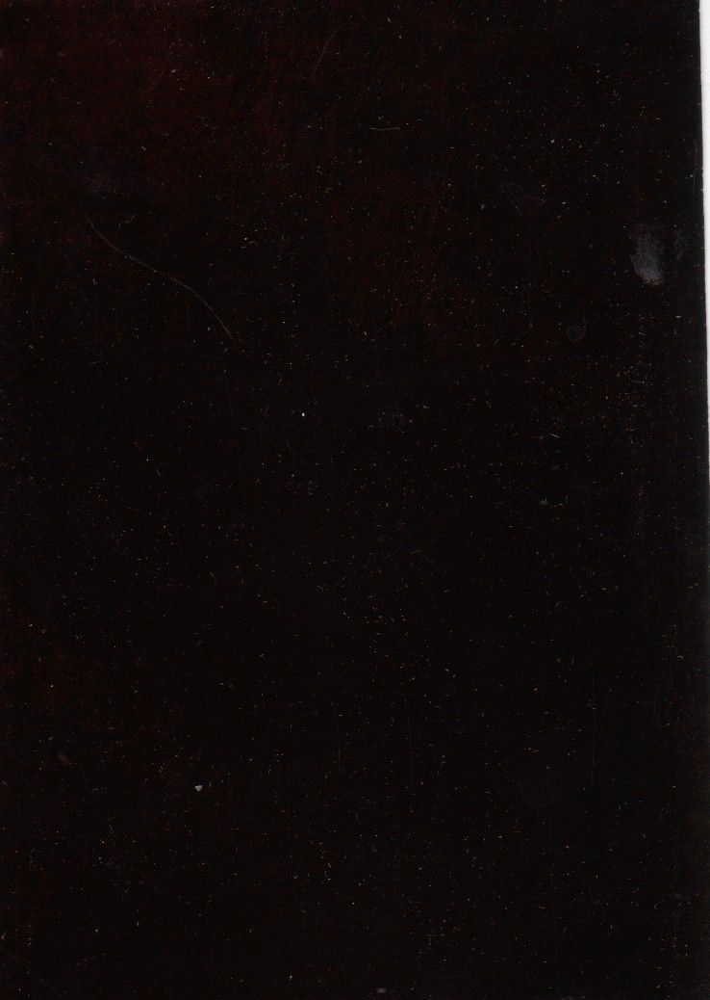
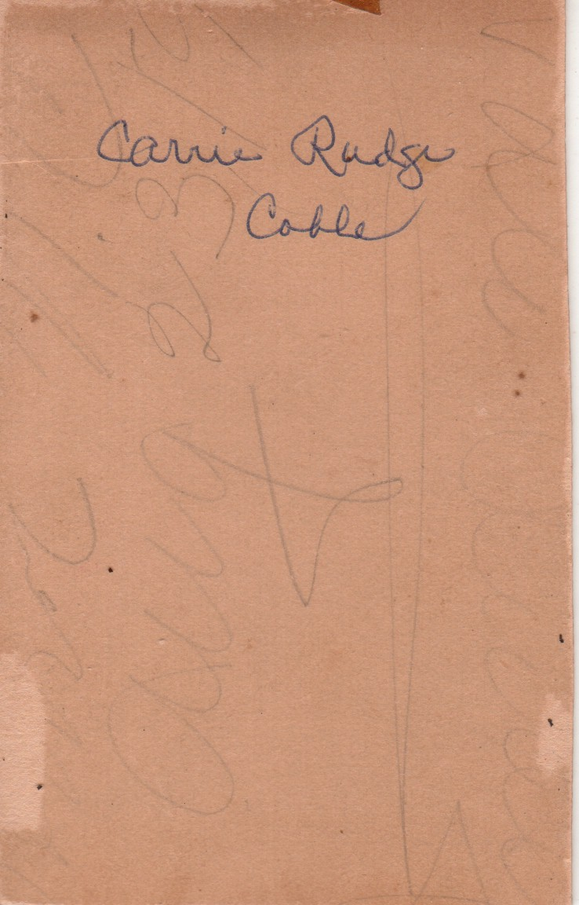

Photographs from the Coble Photo Album
Note: Neither the Rudge or Coble families ever lived in Virginia to by knowledge, so photos in this location are presumably from the Pae and Bath side of the family (Caroline Virginia nee Pae married John William Rudge). Both the Cobles and the Rudges lived in Wilmington, NC, as did Caroline Virginia nee Pae's immediate family prior to her marriage.
Tintypes (no location provided)
Remaining photos (other or no location provided)
It's tempting to think 16, 10 and 19 are all of the same young woman, identified in one as Addie M. Cook.
2. This is a picture of a boy in a uniform. According to the back, it was taken in Richmond, VA.
16. This is a photo of young woman. On the back it indicates it was taken in Richmond, VA.

10. This is a photo of a young woman. On the back it reads "To Aunt Sophia, from her devoted neice Addie M. Cook". On the back it indicates it was taken in Richmond, VA in 1872.
19. This is a photo of a teenage girl. According to the back, it was taken in Richmond, VA in 1872, the date is also written on it.
23. This is a photo of a woman. According to the back, it was taken in Richmond, VA. It is dated 1868.


11. This is a photo of a baby. On the front it reads "Lelia Munson Houston". It was taken in Richmond, VA.

22. This is a photo of a man in a suit. According to the back, it was taken in Richmond, VA. It is dated Nov. 16 1868.
24. This is a photo of a woman, which was identified to me by Kathryn nee Coble Niven as Mrs. Caroline Virginia nee Pae Rudge. On the back it faintly states that it was taken in Richmond, VA.
1. This is a picture of a man. According to the back, it was taken by C. W. Yates in Wilmington, NC. This appears to be John Bunyan Coble (compare with a photo in which he has been positively identified here.
6. This is a photo of a young woman. According to the back, it was taken by C. W. Yates in Wilmington, NC.
8. This is a photo of a young man in a uniform. According to the back, it was taken by C. W. Yates in Wilmington, NC. The signature appears to read "Respectfully, P. W. Tilligaw [?]". I think he is J. A. M. Coble.
13. This is a photo of a very young boy. According to the back, it was taken by C. W. Yates in Wilmington, NC.
18. This is a photo of small boy. According to the back, it was taken by C. W. Yates in Wilmington, NC.
21. This is a photo of a young man. According to the back, it was taken by C. W. Yates in Wilmington, NC.
5. This is a photo of three men. According to the back, it was taken in Wilmington, NC. I think the man in the middle is John William Rudge (1849-1915).
As much as it would simplify things to assume the tintypes were all taken at the same time and place, tintypes 20 and 12 appear to be of the same two girls at different ages. Only the last of the five (of a little girl) was identified-- as Carrie Rudge Coble. (From the apparent style of the clothing, the writer must be referring to Carrie nee Rudge Coble and not her daughter, Caroline Rudge nee Coble Jones.) If this photo is one and the same as the youngest girl in tintypes 20 and 12, it suggests the two girls depicted are Bettie Louise Rudge (b. 1871) and Caroline Virginia nee Rudge (b.1874). If I had to guess, I'd say the woman in tintype 7 is a young Caroline Virginia nee Pae, and from her apparent age, before she was married.

25. This is a tintype of a man and a woman. Kathryn nee Coble Niven told me she was told that it was taken in Wilmington shortly before one of them died. This strongly suggests it is a photo of John and Louisa nee Mitchell Rudge.
7. This is a tintype of a young woman. I think it is Caroline Virginia nee Pae Rudge.


20. This is a tintype of two young girls. I think these are Caroline Virginia nee Rudge Coble and her older sister Betty Louise Rudge.


12. This is a tintype of two young girls. I think these are Betty Louise Rudge and her younger sister Caroline Virginia nee Rudge Coble.


4. This is a tintype of a girl. The name written on the back states "Carrie Rudge Coble". Notice the last word appears to have been added later, i.e. after she married.
I'm inclined to think that 17 and 26 are of the same woman, Caroline Virginia nee Pae Rudge at different ages. 17 also looks similar to tintype 7.

3. This is a picture of a man. A name written on the front states "Rev. E.B. Channy". According to the back, it was taken in Danville, VA.
15. This is a photo of woman. On the front it reads "Alice P. Tomlinson, Bush Hill, N.C.".
9. This is a photo of a man with a beard.

14. This is a photo of young woman. On the back it reads "Carrie Rudge Coble".
17. This is a photo of young woman with a large pink bow. On the back it has a 2 cent stamp that appears to have the words "Feb 28" written on it. I think it is Caroline Virginia nee Pae Rudge.
26. This is a reproduction of an original photo of a woman, which was identified to me by Kathryn nee Coble Niven as Mrs. Caroline Virginia nee Pae Rudge.
Back to the Coble Album
Last updated on 3 Mar 2011